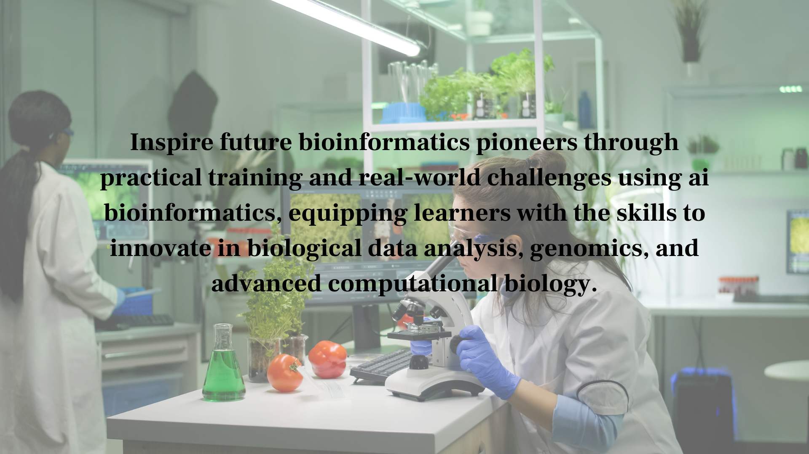
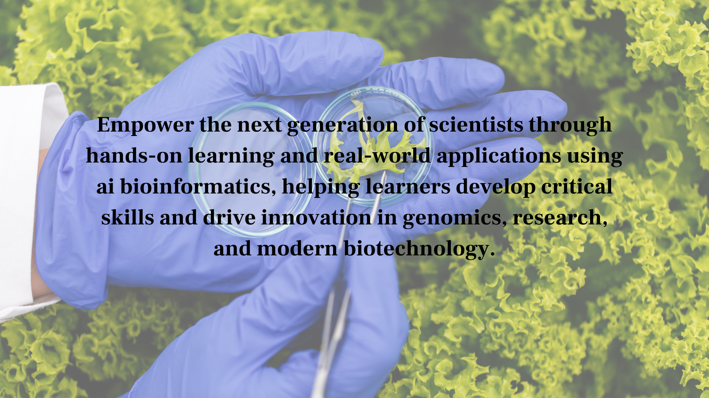
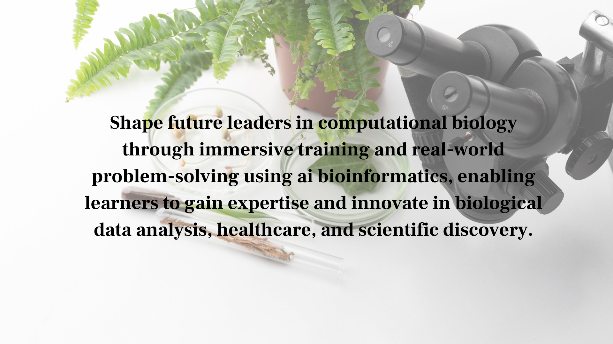

AI Bioinformatics Explained : How to Get Started with Biological Data Analysis
AI bioinformatics is transforming how scientists analyze and interpret complex biological data. Traditionally, bioinformatics relied on statistical models and manual analysis, which often required significant time and computational effort. Today, ai bioinformatics combines artificial intelligence, machine learning, and large-scale biological datasets to uncover patterns, predict outcomes, and accelerate discoveries with greater efficiency. Through ai bioinformatics, researchers can analyze genomic sequences, protein structures, and biological systems with unprecedented speed and accuracy. Additionally, ai bioinformatics enables more scalable and automated analysis, making it easier to handle increasingly complex biological datasets.
AI bioinformatics is transforming how scientists analyze and interpret complex biological data. Traditionally, bioinformatics relied on statistical models and manual analysis, which often required significant time and computational effort. Today, ai bioinformatics combines artificial intelligence, machine learning, and large-scale biological datasets to uncover patterns, predict outcomes, and accelerate discoveries with greater efficiency. Through ai bioinformatics, researchers can analyze genomic sequences, protein structures, and biological systems with unprecedented speed and accuracy. Additionally, ai bioinformatics enables more scalable and automated analysis, making it easier to handle increasingly complex biological datasets.

AI Bioinformatics
Table of Contents
What Is AI Bioinformatics?
AI bioinformatics refers to the integration of artificial intelligence techniques with bioinformatics to analyze biological data more efficiently and accurately. AI bioinformatics uses machine learning, deep learning, and data analytics to process genomic, proteomic, and biomedical data. By using ai bioinformatics, researchers can uncover complex biological patterns and generate insights that would be difficult to achieve through traditional methods alone. Additionally, ai bioinformatics enables more scalable and automated workflows, accelerating discoveries across genomics and biomedical research. Furthermore, ai bioinformatics improves predictive modeling, allowing researchers to anticipate biological outcomes and enhance decision-making in complex systems.
- Analyze genomic data using AI bioinformatics
- Predict protein structures with AI bioinformatics
- Identify biological patterns using AI bioinformatics
- Support biomedical research through AI bioinformatics
Applications of AI Bioinformatics
AI bioinformatics is widely used across healthcare, genomics, and biotechnology. One of its key applications is in drug discovery, where ai bioinformatics helps identify potential drug targets and predict their effectiveness. AI bioinformatics is also used in genome analysis, disease prediction, and personalized medicine to improve healthcare outcomes. Additionally, ai bioinformatics enhances large-scale data interpretation, enabling faster and more accurate insights in complex biological research. Furthermore, ai bioinformatics supports the integration of diverse biological datasets, enabling more comprehensive and holistic analysis of complex systems.
- Drug discovery and development
- Genome sequencing and analysis
- Disease prediction and diagnostics
- Precision medicine
Benefits of AI Bioinformatics
AI bioinformatics offers significant advantages over traditional bioinformatics approaches. It enables faster data analysis, improves accuracy, and reduces computational complexity. AI bioinformatics also helps uncover hidden patterns in biological data, leading to more effective research outcomes and innovations. Additionally, ai bioinformatics supports scalable analysis of massive biological datasets, making it suitable for modern high-throughput research. As ai bioinformatics continues to evolve, it will further enhance predictive capabilities and drive more precise scientific discoveries.
- Faster biological data analysis
- Improved prediction accuracy
- Reduced research time and cost
- Enhanced data-driven insights

AI Bioinformatics
How to Get Started with AI Bioinformatics
Getting started with AI bioinformatics requires a combination of biological knowledge, programming skills, and understanding of machine learning techniques. Beginners can start by learning basic concepts of bioinformatics, followed by exploring programming languages such as Python and tools like TensorFlow or Biopython. AI bioinformatics also requires familiarity with biological datasets and data analysis methods. Additionally, hands-on practice with real-world datasets is essential to build practical expertise in AI bioinformatics. As learners progress, working on projects and research problems will further strengthen their understanding and skills.
- Learn fundamentals of bioinformatics
- Understand machine learning concepts
- Work with biological datasets
- Use AI tools and frameworks
By consistently practicing and working on real-world projects, anyone can build strong expertise in ai bioinformatics and contribute to advancements in science and healthcare. Additionally, engaging with research communities and open-source projects can accelerate learning and exposure to real-world challenges. Over time, continuous learning in ai bioinformatics will enable individuals to stay updated with emerging technologies and innovations.
Future of AI Bioinformatics
The future of ai bioinformatics looks promising with advancements in deep learning, big data, and computational biology. AI bioinformatics will become more accurate, scalable, and integrated into research and healthcare systems. Additionally, ai bioinformatics will enable real-time biological data analysis, accelerating discoveries across multiple scientific domains. Furthermore, ai bioinformatics will enhance predictive modeling capabilities, enabling more precise and personalized approaches in medicine and research. As ai bioinformatics continues to evolve, it will drive innovation across genomics, biotechnology, and global health systems.
- Real-time genomic analysis
- AI-driven drug discovery
- Integration with healthcare systems
- Advanced computational biology tools

AI Bioinformatics
As ai bioinformatics continues to evolve, it will redefine how scientists understand biological systems and drive innovation in medicine, biotechnology, and global health. This continued advancement of ai bioinformatics will enable deeper insights into complex biological data and improve the accuracy of scientific predictions. Furthermore, ai bioinformatics will foster greater collaboration across disciplines, accelerating breakthroughs and transforming the future of research and healthcare.